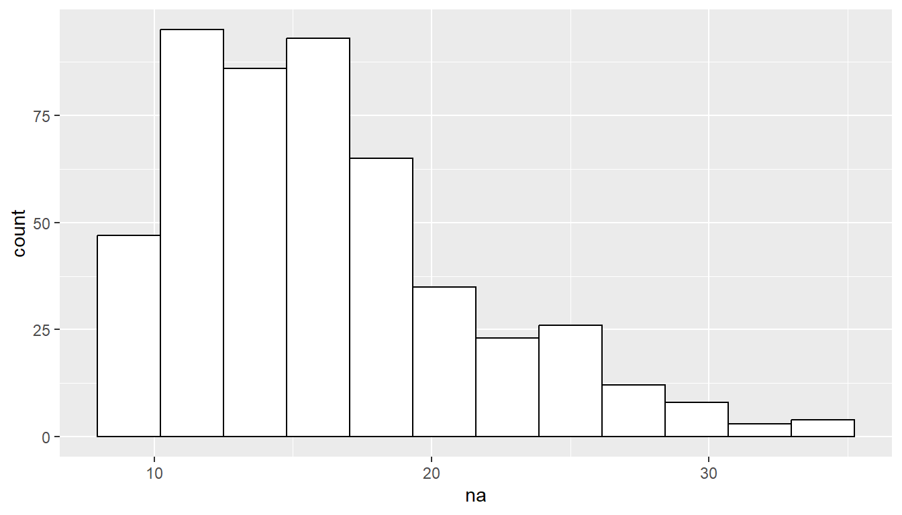
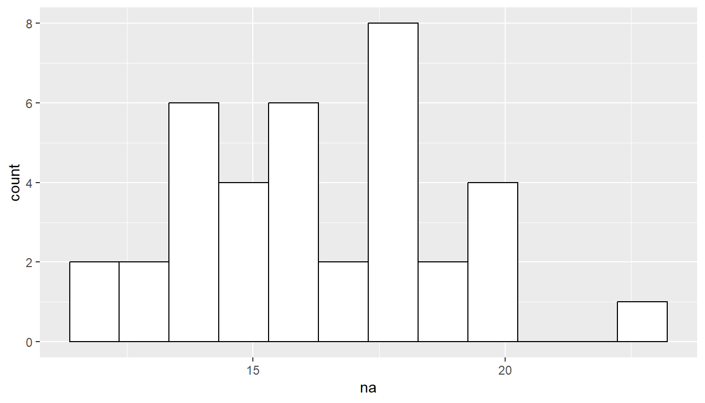
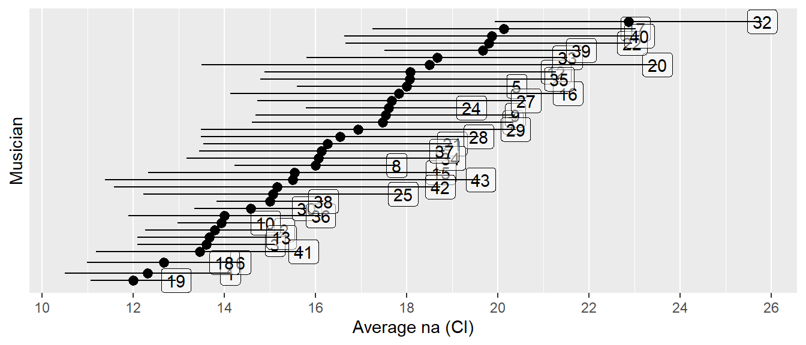
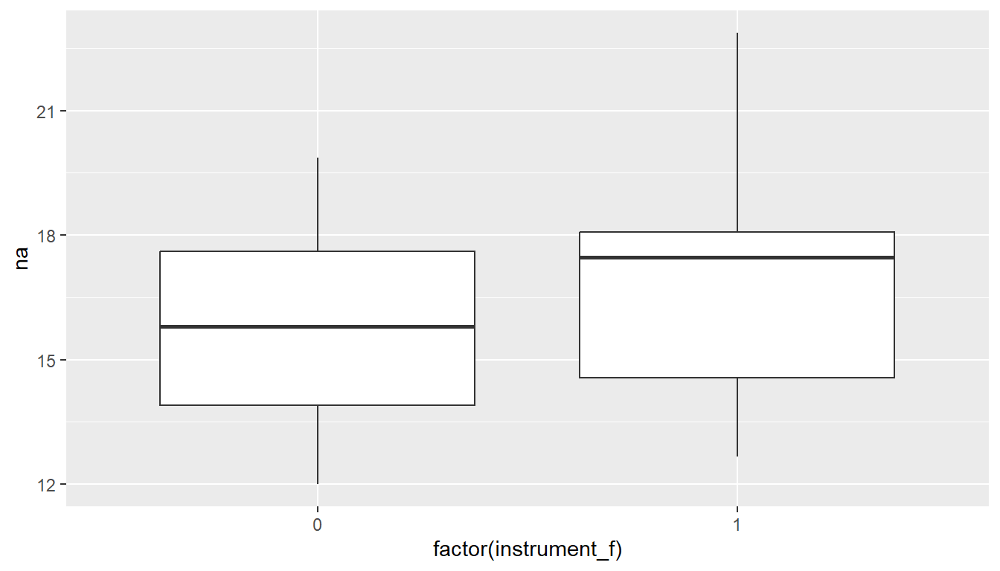
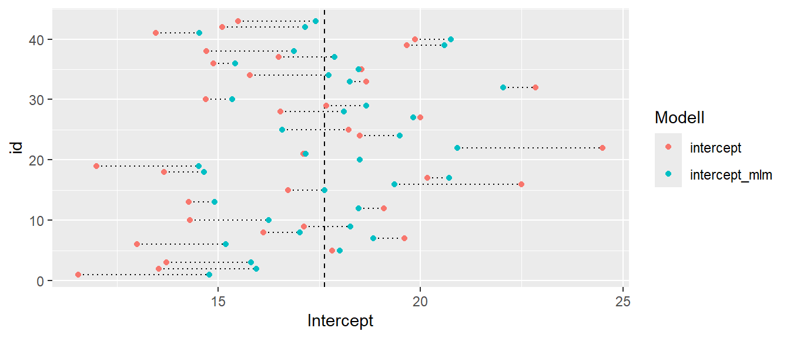

| id | na | large | instrument_f |
|---|---|---|---|
| 29 | 16 | 0 | 0 |
| 15 | 11 | 0 | 0 |
| 12 | 23 | 0 | 1 |
| 37 | 31 | 0 | 0 |
| 41 | 16 | 0 | 1 |
| 27 | 13 | 1 | 0 |
| 25 | 24 | 0 | 1 |
| 40 | 18 | 0 | 0 |
| 17 | 28 | 0 | 1 |
| 28 | 21 | 0 | 0 |
24 Gemischte Lineare Modelle
In allen bisherigen Modellen, war eine zentrale Annahme, dass die Objekte unabhängig voneinander sind. Ob bei der einfachen, der multiplen oder der logistischen Regression, die Annahme war in allen Fällen, dass die einzelnen Datenpunkte unabhängig voneinander sind. Allerdings kommt es natürlich in der Realität vor, dass mehrere Messwerte von den gleichen Punkten ermittelt werden, um beispielsweise die Präzision zu erhöhen. Oder es sollen zwei Gruppen vor und nach einem Treatment miteinander verglichen werden. In diesen Fällen ist die Annahme der unabhängig verletzt. In diesem Fall werden sogenannte gemischte lineare Modelle verwendet. Gemischte lineare Modelle werden auch als hierarchische Modelle oder Mehrebenenmodelle bezeichnet. Konzeptionell stellen die gemischten Modelle einer Erweiterung der Modelle die bisher behandelt wurden dar oder anders herum, die multiple lineare Regression ist ein Spezialfall der gemischten linearen Modelle. Vorteil ist auch wieder, dass die bereits gelernten Konzepte angewendet werden können.
24.1 Setup
| x | y |
|---|---|
| 1 | 1.1 |
| 2 | 1.6 |
| 3 | 3.3 |
| 4 | 4.1 |

24.2 Kovarianz und Korrelation
\[\begin{align*} \sigma_{XY} &= E[(X-\mu_X)(Y-\mu_Y)] \\ \text{cov}(x,y) &= \frac{\sum_{i=1}^N (x_i - \bar{x})(y_i - \bar{y})}{N-1} \end{align*}\]
\[\begin{align*} \rho_{XY} &= \frac{\sigma_{XY}}{\sigma_X \sigma_Y} \\ r_{xy} &= \frac{\text{cov}(x,y)}{s_x s_y} \end{align*}\]
\[ \sigma_{XY} = \sigma_X \cdot \sigma_Y \cdot \rho_{XY} \]
24.3 Residuenannahme - Einfache Lineare Regression
\[ \epsilon_i \sim \mathcal{N}(0,\sigma^2), i \in [1,2,3,4], \textrm{iid} \]
24.3.1 Identisch verteilt
\[ \begin{matrix} \epsilon_1 \sim \mathrm{N}(0,\sigma^2) \\ \epsilon_2 \sim \mathrm{N}(0,\sigma^2) \\ \epsilon_3 \sim \mathrm{N}(0,\sigma^2) \\ \epsilon_4 \sim \mathrm{N}(0,\sigma^2) \\ \end{matrix} \]
24.3.2 Unabhängig
\[ \text{cov}(\epsilon_i,\epsilon_j) = 0, \quad i,j \in [1,2,3,4], i\neq j \]
24.4 Varianz-Kovarianzmartrix der Residuen
\[ \Sigma = \begin{pmatrix} \sigma^2 & 0 & 0 & 0 \\ 0 & \sigma^2 & 0 & 0 \\ 0 & 0 & \sigma^2 & 0 \\ 0 & 0 & 0 & \sigma^2 \end{pmatrix} \]
24.5 Verteilungsannahme der Residuen in Matrizenschreibweise
Mit \[ \mathbf{0} = \begin{pmatrix} 0 & 0 & 0 & 0 \end{pmatrix}^\top \]
\[ \boldsymbol{\epsilon} \sim \mathcal{N}(\mathbf{0},\Sigma) \]
24.6 Andere Schreibweise der Varianz-Kovarianzmatrix
24.6.1 Einheitsmatrix
\[ \begin{pmatrix} 1 & 0 & 0 & 0 \\ 0 & 1 & 0 & 0 \\ 0 & 0 & 1 & 0 \\ 0 & 0 & 0 & 1 \\ \end{pmatrix} \]
24.6.2 Varianz-Kovarianzmatrix
\[ \Sigma = \sigma^2\begin{pmatrix} 1 & 0 & 0 & 0 \\ 0 & 1 & 0 & 0 \\ 0 & 0 & 1 & 0 \\ 0 & 0 & 0 & 1 \\ \end{pmatrix} \]
24.7 Allgemeiner Fall der Varianz-Kovarianzmatrix
24.7.1 Multivariate Normalverteilung
\[ \mu = \begin{pmatrix} \mu_1 \\ \mu_2 \\ \mu_3 \\ \mu_4 \end{pmatrix} \quad \]
\[ \Sigma = \begin{pmatrix} \sigma_1^2 & \sigma_{12} & \sigma_{13} & \sigma_{14} \\ \sigma_{21} & \sigma_2^2 & \sigma_{23} & \sigma_{24} \\ \sigma_{31} & \sigma_{32} & \sigma_3^2 & \sigma_{34} \\ \sigma_{41} & \sigma_{42} & \sigma_{43} & \sigma_4^2 \\ \end{pmatrix} = \begin{pmatrix} \sigma_1^2 & \rho_{12}\sigma_1\sigma_2 & \rho_{13}\sigma_1\sigma_{3} & \rho_{14}\sigma_1\sigma_{4} \\ \rho_{21}\sigma_2\sigma_{1} & \sigma_2^2 & \rho_{23}\sigma_2\sigma_{3} & \rho_{24}\sigma_2\sigma_{4} \\ \rho_{31}\sigma_3\sigma_{1} & \rho_{32}\sigma_3\sigma_{2} & \sigma_3^2 & \rho_{34}\sigma_3\sigma_{4} \\ \rho_{41}\sigma_4\sigma_{1} & \rho_{42}\sigma_4\sigma_{2} & \rho_{43}\sigma_4\sigma_{3} & \sigma_4^2 \\ \end{pmatrix} \]
24.8 Alternative Schreibweise - einfache Regression
24.8.1 Indexschreibweise
\[ \begin{matrix} \epsilon_i = y_i - \hat{y}_i & | + \hat{y}_i & \sim \mathcal{N}(0,\sigma^2) \\ \Leftrightarrow \epsilon + \hat{y}_i = y_i & & \sim \mathcal{N}(0,\sigma^2) +\hat{y} \\ & & = \mathcal{N}(\hat{y},\sigma^2) \\ & & = \mathcal{N}(\beta_0 + \beta_1\cdot x_i,\sigma^2) \\ \end{matrix} \]
\[ y_i \sim \mathcal{N}(\beta_0 + \beta_1\cdot x_i,\sigma^2) \]
24.8.2 Matrizenschreibweise
\[ \mathbf{Y} = \mathcal{N}(\mathbf{X}\boldsymbol{\beta},\Sigma) \]
24.9 Wofür?
z.B. Daten von Schülern aus Klassen aus Schulen
24.10 Patterned covarianz matrices
\[ \Sigma = \begin{pmatrix} \Sigma_1 & 0 \\ 0 & \Sigma_2 \end{pmatrix} \]
\[ \Sigma_i = \begin{pmatrix} \sigma_1^2 & \rho_{12}\sigma_1\sigma_2 \\ \rho_{21}\sigma_1\sigma_2 & \sigma_2^2 \\ \end{pmatrix} \]
id= unique musician identification numberna= negative affect score from PANASperf_type= type of performance (Solo, Large Ensemble, or Small Ensemble)instrument= Voice, Orchestral, or Piano
24.11 Explorative Analyse Univariate - Individual vs. Grouped


24.12 Explorative Analyse Bivariate - Average na

24.13 Explorative Analyse Bivariate - Individual vs. Grouped


24.14 Multilevel modelling - Terminologie
- Level one refers to the individual-level data, capturing variation within groups (e.g., students within classes).
- Level two refers to the group-level data, capturing variation between groups (e.g., differences between classes or schools).
24.15 Two-stage modelling - Level One
24.15.1 Musiker No. 22
\[\begin{align*} Y_{22j} &= a_{22}+b_{22}\textrm{large}_{22j}+\epsilon_{22j} \quad \epsilon_{22j}\sim N(0,\sigma^2)\\ \textrm{large}_{j} &= \begin{cases} 1 & \textrm{if perf-type = Large Ensemble} \\ 0 & \textrm{if perf-type = Solo or Small Ensemble} \end{cases} \end{align*}\]
24.16 Musiker No. 22
df_22 <- df |> filter(id == 22)
mod_22 <- lm(na ~ large, df_22)| term | estimate | std.error | statistic | p.value |
|---|---|---|---|---|
| (Intercept) | 24.50 | 1.96 | 12.5 | 0.00 |
| large | -7.83 | 2.53 | -3.1 | 0.01 |
| sigma | 4.80 |
24.17 Level One für alle Musiker


24.18 Two-stage modelling - Level Two
\[\begin{align*} a_{i} & = \alpha_{0}+\alpha_{1}\textrm{Orch}_{i}+u_{i} \\ b_{i} & = \beta_{0}+\beta_{1}\textrm{Orch}_{i}+v_{i} \end{align*}\]
24.19 Two-stage modelling - Level Two fit
\[\begin{align*} \hat{a}_{i} & = 16.3+1.4\textrm{Orch}_{i}+u_{i} \\ \hat{b}_{i} & = -0.8-1.4\textrm{Orch}_{i}+v_{i} \end{align*}\]
24.20 Multilevel-Approach
- Level One: \[\begin{equation*} Y_{ij} = a_{i}+b_{i}\textrm{LargeEns}_{ij}+\epsilon_{ij} \end{equation*}\]
- Level Two: \[\begin{align*} a_{i} & = \alpha_{0}+\alpha_{1}\textrm{Orch}_{i}+u_{i} \\ b_{i} & = \beta_{0}+\beta_{1}\textrm{Orch}_{i}+v_{i}, \end{align*}\]
\[\begin{align*} Y_{ij} & = [\alpha_{0}+\alpha_{1}\textrm{Orch}_{i}+\beta_{0}\textrm{LargeEns}_{ij}+\beta_{1}\textrm{Orch}_{i}\textrm{LargeEns}_{ij}] \\ & \textrm{} + [u_{i}+v_{i}\textrm{LargeEns}_{ij}+\epsilon_{ij}] \end{align*}\]
24.21 Model Building - Random Intercepts
- Level One: \[ Y_{ij} = a_{i}+\epsilon_{ij} \textrm{ where } \epsilon_{ij}\sim N(0,\sigma^2) \]
- Level Two: \[ a_{i} = \alpha_{0}+u_{i} \textrm{ where } u_{i}\sim N(0,\sigma_{u}^{2}) \]
\[ Y_{ij}=\alpha_{0}+u_{i}+\epsilon_{ij} \]
24.22 Model Building - Random Intercepts
mod_0 <- lmer(na ~ 1 + (1|id), data = df)24.23 Intraclass correlation cofficient
\[\begin{align*} \rho &=\frac{\textrm{Between-person variability}}{\textrm{Total variability}} \\ &= \frac{\hat{\sigma}_{u}^{2}}{\hat{\sigma}_{u}^{2}+\hat{\sigma}^2} \end{align*}\]
\[ \hat{\rho} =\frac{5.0}{5.0+22.5} = .182. \]
24.24 Model Building - Random Slopes and Intercepts
- Level One: \[\begin{equation*} Y_{ij} = a_{i}+b_{i}\textrm{LargeEns}_{ij}+\epsilon_{ij} \end{equation*}\]
- Level Two: \[\begin{align*} a_{i} & = \alpha_{0}+u_{i} \\ b_{i} & = \beta_{0}+v_{i} \end{align*}\]
\[\begin{equation*} Y_{ij}=[\alpha_{0}+\beta_{0}\textrm{LargeEns}_{ij}]+[u_{i}+v_{i}\textrm{LargeEns}_{ij}+\epsilon_{ij}] \end{equation*}\]
\[ \epsilon_{ij}\sim N(0,\sigma^2)\quad\left[ \begin{array}{c} u_{i} \\ v_{i} \end{array} \right] \sim N \left( \left[ \begin{array}{c} 0 \\ 0 \end{array} \right], \left[ \begin{array}{cc} \sigma_{u}^{2} & \\ \rho\sigma_{u}\sigma_{v} & \sigma_{v}^{2} \end{array} \right] \right). \]
24.25 Model Building - Random Slopes and Intercepts
mod_1 <- lmer(na ~ large + (large|id), data = df)24.26 Pseudo \(R^2\)
\[\begin{align*} \textrm{Pseudo }R^2_{L1} &= \frac{\hat{\sigma}^{2}(\textrm{Model A})-\hat{\sigma}^{2}(\textrm{Model B})}{\hat{\sigma}^{2}(\textrm{Model A})} \\ &= \frac{22.5-21.8}{22.5} = 0.031 \end{align*}\]
24.27 Eine Kovariate auf Level Two hinzufügen
Level One: \[\begin{equation*} Y_{ij} = a_{i}+b_{i}\textrm{LargeEns}_{ij}+\epsilon_{ij} \end{equation*}\]
Level Two: \[\begin{align*} a_{i} & = \alpha_{0}+\alpha_{1}\textrm{Orch}_{i}+u_{i} \\ b_{i} & = \beta_{0}+\beta_{1}\textrm{Orch}_{i}+v_{i}, \end{align*}\] \(\epsilon_{ij}\sim N(0,\sigma^2)\) and
\[ \left[ \begin{array}{c} u_{i} \\ v_{i} \end{array} \right] \sim N \left( \left[ \begin{array}{c} 0 \\ 0 \end{array} \right], \left[ \begin{array}{cc} \sigma_{u}^{2} & \\ \rho\sigma_{u}\sigma_{v} & \sigma_{v}^{2} \end{array} \right] \right). \]
24.28 Eine Kovariate auf Level Two hinzufügen
mod_2 <- lmer(na ~ large + instrument_f + large:instrument_f +
(1|id), data = df)24.29 Finales Modell
mod_3 <- lmer(na ~ large + instrument_f + large:instrument_f +
(large|id), data = df)24.30 Modellvergleiche
anova(mod_2, mod_3)Data: df
Models:
mod_2: na ~ large + instrument_f + large:instrument_f + (1 | id)
mod_3: na ~ large + instrument_f + large:instrument_f + (large | id)
npar AIC BIC logLik deviance Chisq Df Pr(>Chisq)
mod_2 6 3003.6 3028.9 -1495.8 2991.6
mod_3 8 3007.2 3040.8 -1495.6 2991.2 0.4302 2 0.806524.31 Pooling
